The Egyptian Museum in Cairo is one of the world's most renowned museums, housing an extensive collection of ancient Egyptian artifacts. Established in 1835, it stands as the oldest archaeological museum in the Middle East.
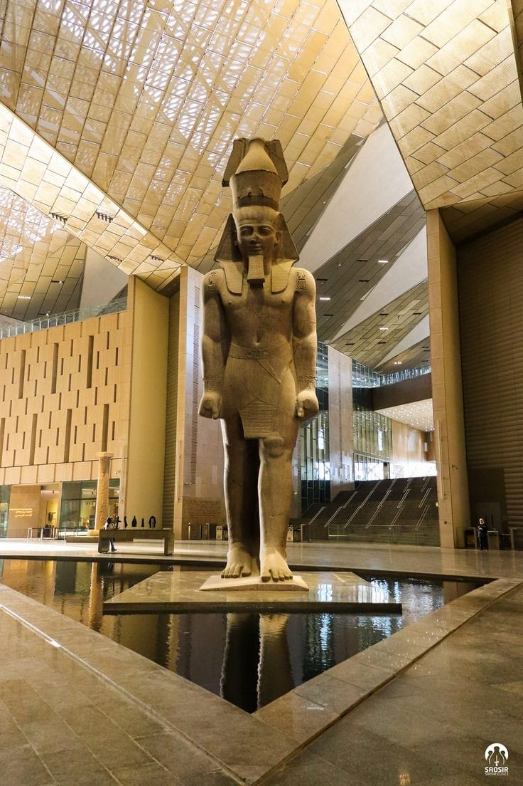 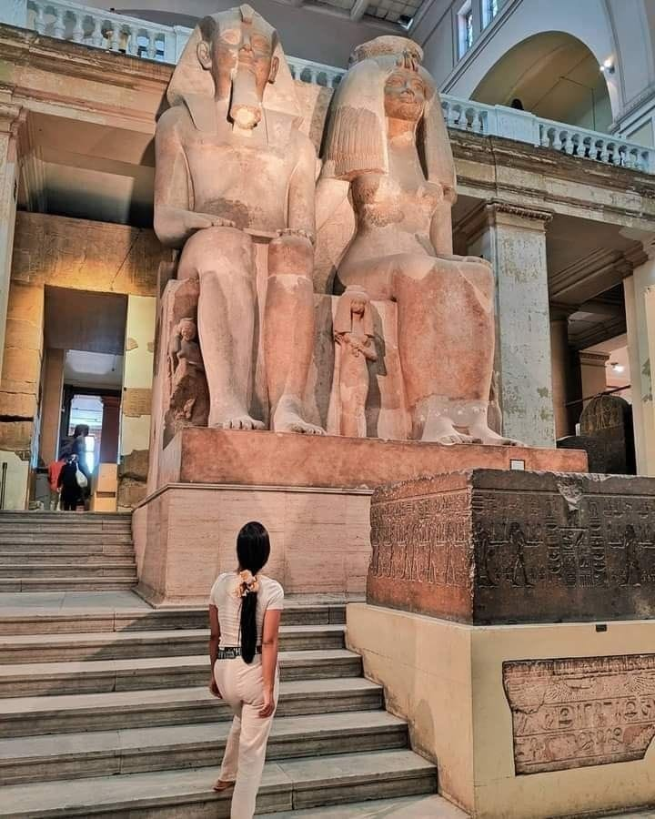 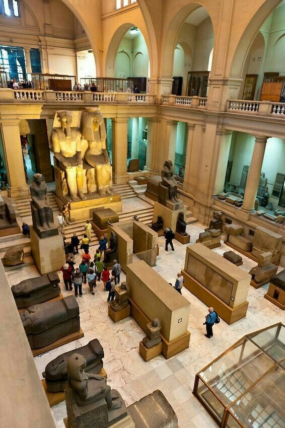The museum's inception dates back to August 15, 1835, when Muhammad Ali Pasha issued a decree to prevent the export of antiquities from Egypt. Initially, the collection was housed in the Azbakeya Garden, then moved to a hall in the Citadel of Salah al-Din. In 1858, under the guidance of French Egyptologist Auguste Mariette, a dedicated museum was established in Bulaq. After a flood in 1878, the artifacts were transferred to an annex of the Khedive Ismail Palace in Giza. Finally, in 1902, the current building in Tahrir Square was inaugurated during the reign of Khedive Abbas Helmy II.
The museum boasts over 170,000 artifacts spanning from the Prehistoric era to the Greco-Roman period. Notable collections include:
Visitors can reach the Egyptian Museum through various transportation methods:
Given Cairo's bustling nature, it's recommended to plan your journey considering potential traffic delays. Visiting during weekdays and arriving early can provide a more relaxed experience.
Djoser’s Funerary Complex is one of the most significant architectural achievements in ancient Egypt. Located in Saqqara, it was the first large-scale stone structure ever built. Designed by the brilliant architect and vizier Imhotep during the reign of King Djoser (c. 2667–2648 BCE), this complex marked a turning point in Egyptian funerary architecture and set the foundation for the later pyramids of Egypt.
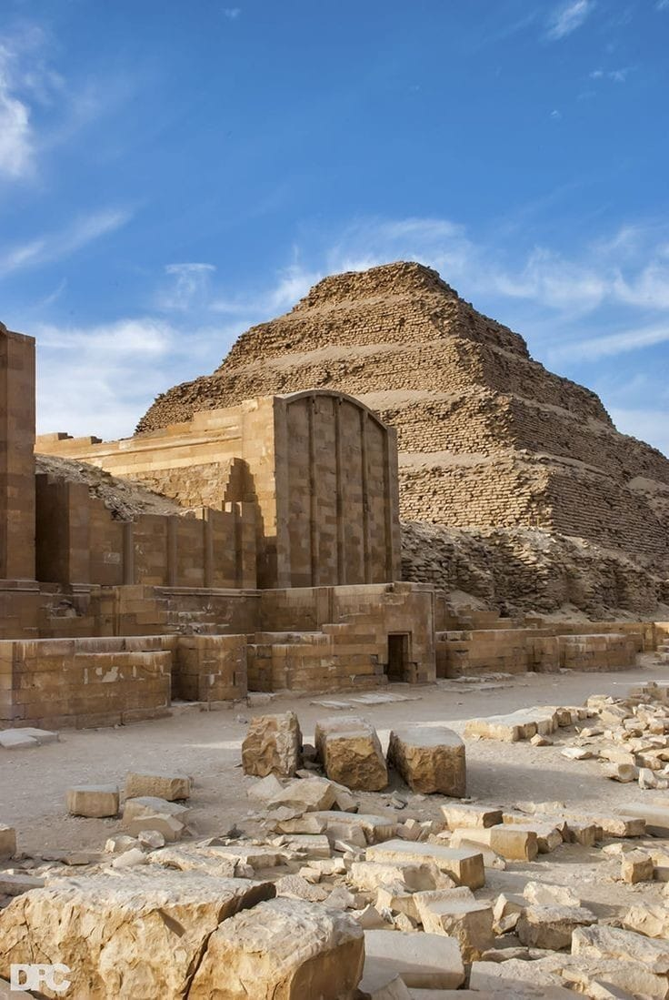 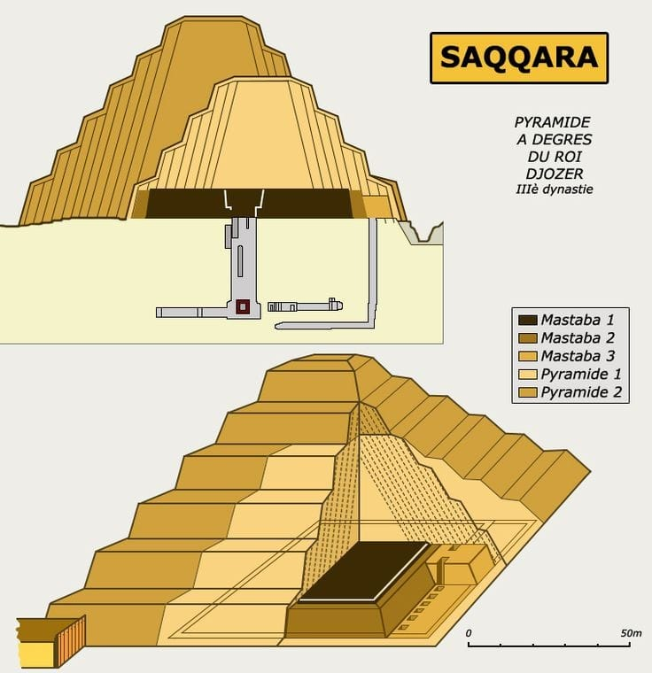The Step Pyramid Complex was the first large-scale construction made entirely of limestone, replacing earlier mudbrick structures. Imhotep introduced columns and stone facades, which influenced the architectural style of future Egyptian temples and tombs.
The complex was explored and excavated by archaeologists in the 19th and 20th centuries. In recent years, Egypt’s Ministry of Antiquities carried out major restoration efforts to stabilize the pyramid and restore the surrounding structures. In March 2020, the Step Pyramid and its complex were officially reopened to visitors after an extensive renovation.
The Pyramids of Giza are one of the most famous archaeological sites in the world and are considered one of the Seven Wonders of the Ancient World. Located in Giza, on the west bank of the Nile River, near Cairo, Egypt.
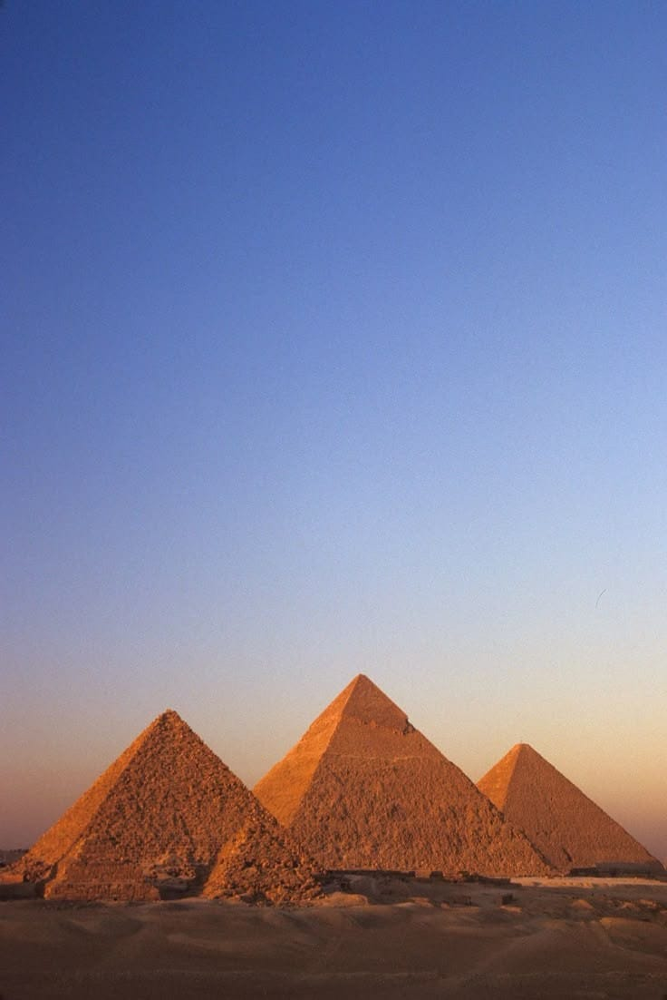 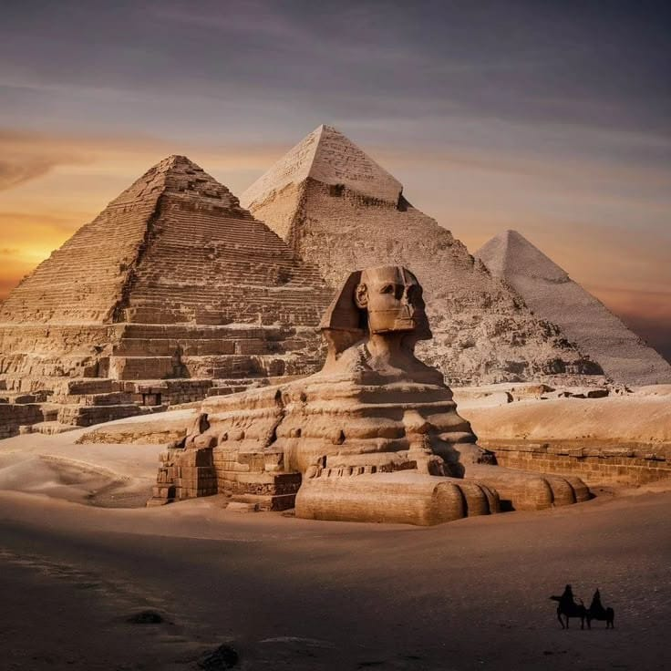The Luxor Museum is a famous museum in Luxor, Egypt. It is located on the Nile River, near the Luxor Temple. The museum is smaller than the Egyptian Museum in Cairo, but it has many important artifacts from ancient Egypt.
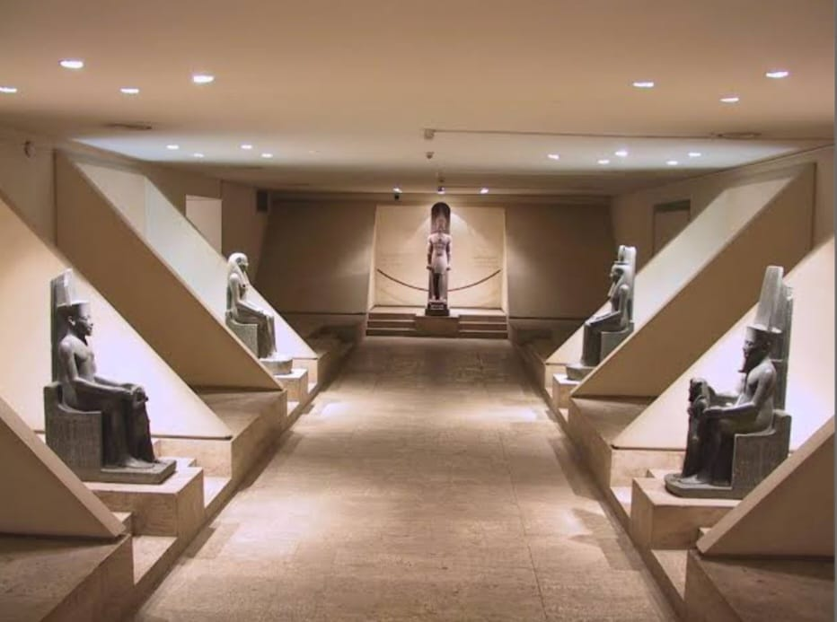 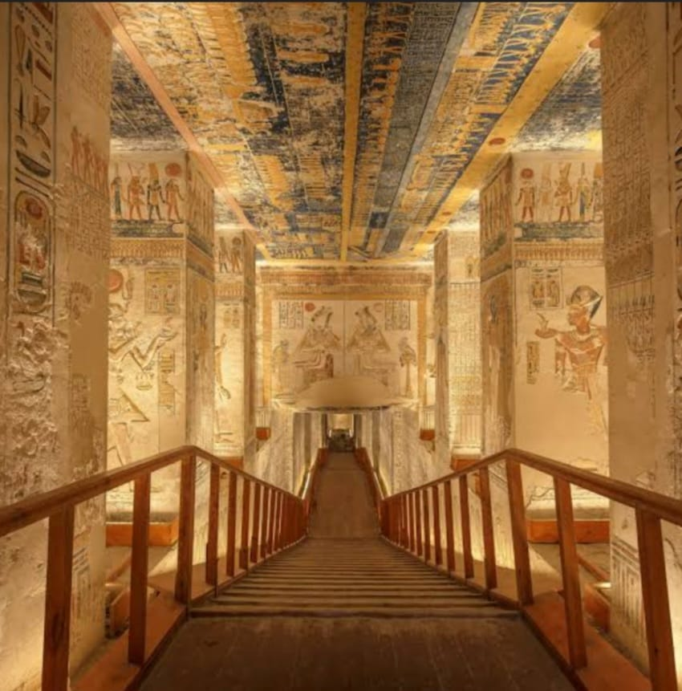The Luxor Museum opened in 1975. It was built to show artifacts found in Luxor and nearby areas. The museum is modern and well-organized, making it easy for visitors to see and understand the exhibits.
The museum has many interesting items, including statues, jewelry, and tools from ancient Egypt. Some of the most famous exhibits are:
The Luxor Museum is a great place to learn about ancient Egyptian history. It is smaller and less crowded than the Egyptian Museum in Cairo, so visitors can take their time to see the exhibits. The museum is also close to other famous sites, like the Luxor Temple and Karnak Temple.
The temple's design was one-of-a-kind for its time. It was constructed on a platform with multiple levels, combining elements from earlier saff-tombs and the traditional Old Kingdom pyramid complex. Originally, there was a valley temple located beneath the cultivated area of the West Bank. A causeway, flanked by trees, led to a spacious forecourt (the causeway and tree-pits can still be seen today). While riding his horse in this forecourt, Howard Carter accidentally stumbled upon the entrance of a deep shaft known as 'Bab el-Hosan' (Gate of the Horse). This shaft was actually part of the Mentuhotep complex, and inside, Carter discovered the famous seated sandstone statue of Mentuhotep II in heb-sed costume, wrapped in linen. This statue is now housed in the Cairo Museum.
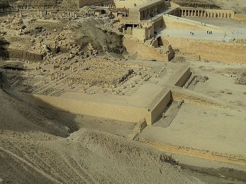 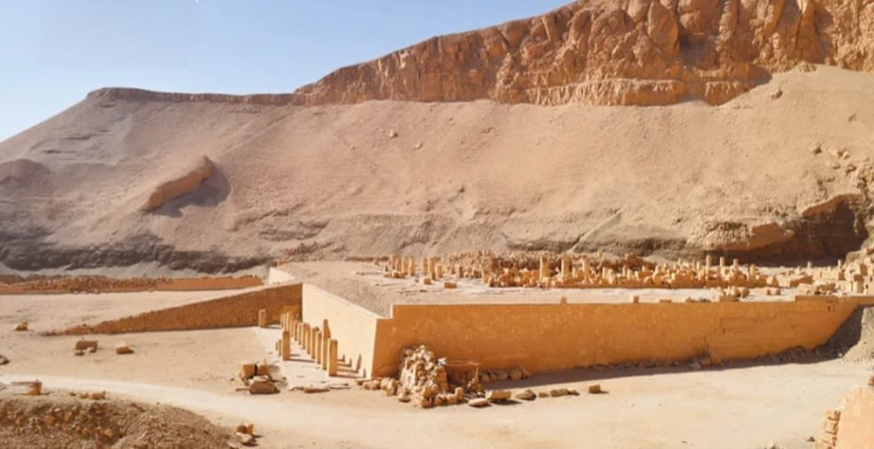 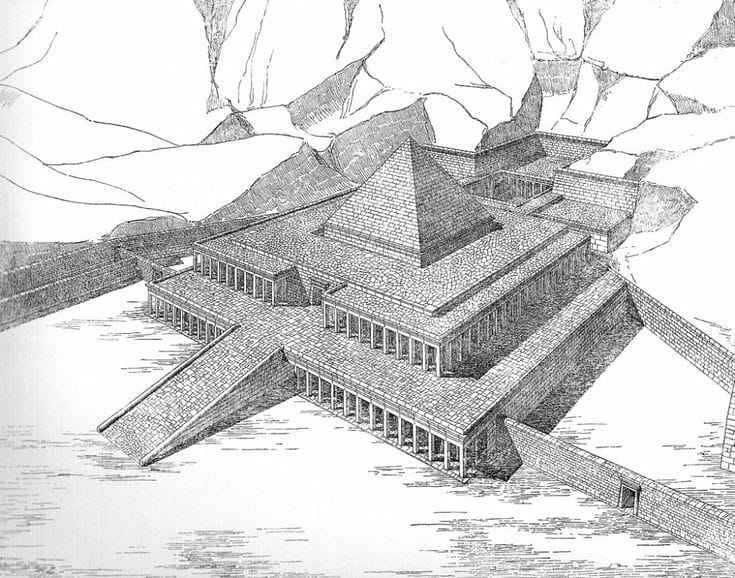There are various theories about the purpose of 'Bab el-Hosan', but it is generally believed that it may have originally been intended as the king's tomb, later converted into a symbolic cenotaph of Osiris. The walled forecourt featured a row of colossal Osirid statues of the king and two smaller gates. The terraced temple appears to have been constructed in multiple phases, possibly three or four. A ramp connects to the second level, which was adorned with sycamore and tamarisk trees on both sides. The lower colonnade contained fragments of rear wall reliefs depicting boat processions and foreign campaigns.
The upper terrace had a double colonnade of pillars with scenes and texts of Mentuhotep. It was surrounded by an ambulatory and a forest of 140 octagonal pillars. In the center, there was a large square structure made of limestone blocks. Egyptologists initially believed it to be the base of a pyramid, but now it is thought to be a mastaba-like structure representing the funerary chapel and symbolizing the primeval mound of creation.
Six shaft tombs were found on the west side of the second terrace behind the colonnade. Each tomb had its own chapel dedicated to a different female family member of Mentuhotep. The tombs, from right to left, belonged to Myt, Ashayt, Sadeh, Kauit, Kemsit, and Henhenit. Ashayt's sarcophagus and decorated wooden coffin are displayed in the Cairo Museum. It is believed that she was a Nubian consort of the king. Kauit, another consort, also has a large decorated sarcophagus in the Cairo Museum, along with a series of model coffins containing wax statuettes of the lady.
On the north-western side of the second terrace, a small chapel dedicated to Hathor and other deities was built during the New Kingdom. In this chapel, a statue of the cow-goddess was discovered in a shrine, which is now housed in the Cairo Museum.
On the main platform of the structure's west side, there is a peristyle court on the second terrace. Inside, there are two rows of pillars and the royal tomb is located in the inner part. Mentuhotep's tomb was carved into the rock below the courtyard and had an uninscribed alabaster shrine. This tomb may have influenced the design of the royal tombs in the Valley of the Kings during the New Kingdom. A lot of wooden models and statuettes, intentionally shattered, were discovered in the chamber. Experts on ancient Egypt discuss whether the king was actually laid to rest in the tomb or if it served as a symbolic burial place for the pharaoh's 'ka' since no sarcophagus was uncovered.
The Temple of Mentuhotep is a complex building, and the limited remains make it difficult to understand. The artwork suggests that Osiris, a god associated with death and the afterlife, gained more importance during this time. The temple's design includes both traditional and new elements. Its original name was 'Akh-sut-Nebhepetre' which means 'Splendid are the cult places of Mentuhotep'.
Mentuhotep's temple is not accessible to the general public, but there are occasions when you can request special permission to visit from the Antiquities Office.